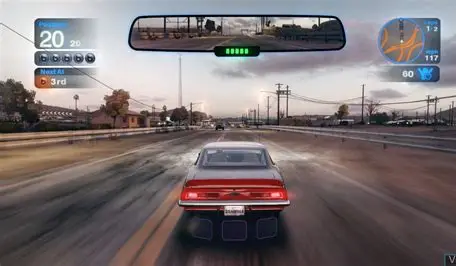

INTERFACE CALL OF DUTY MOBILE - Voici l'écran principal du jeu Call of Duty Mobile. C'est un jeu de tir tactique où je dois faire preuve de stratégie et de rapidité pour gagner les parties multijoueurs.
GAMEPLAY BLUR - Une capture d'écran d'une course intense dans Blur. Ce jeu de course me procure beaucoup d'adrénaline grâce à sa vitesse et aux pouvoirs spéciaux que je peux utiliser pendant les courses.
SCÈNE DE JEU NARUTO - Une scène de combat épique du jeu Naruto. J'adore ce jeu car il me permet d'incarner mes personnages préférés de l'anime et de revivre des combats spectaculaires.
En définitive, le gaming est bien plus qu'un simple passe-temps pour moi. C'est une activité complète qui me permet de m'évader dans des mondes imaginaires, d'aiguiser mes capacités de réflexion et de vivre des expériences uniques, que ce soit par la compétition ou la collaboration. Grâce aux jeux vidéo, j'ai développé ma patience, ma stratégie et mon esprit d'équipe, tout en apprenant l'anglais de manière ludique. C'est un loisir qui me passionne profondément, qui est bénéfique pour mon développement personnel, et que je continuerai assurément de pratiquer avec plaisir.